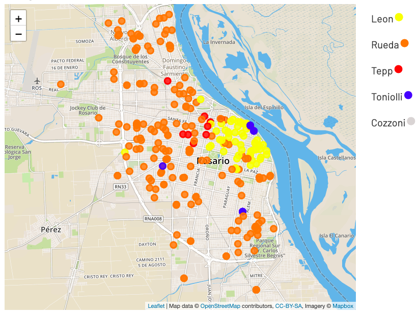
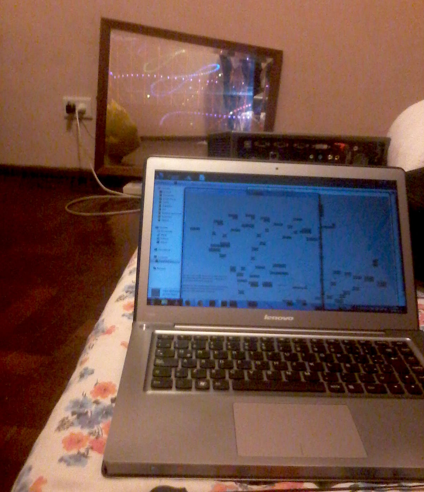
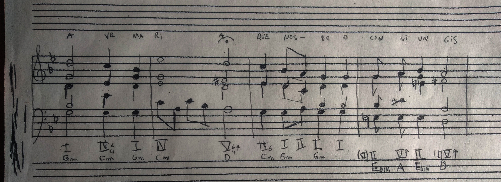
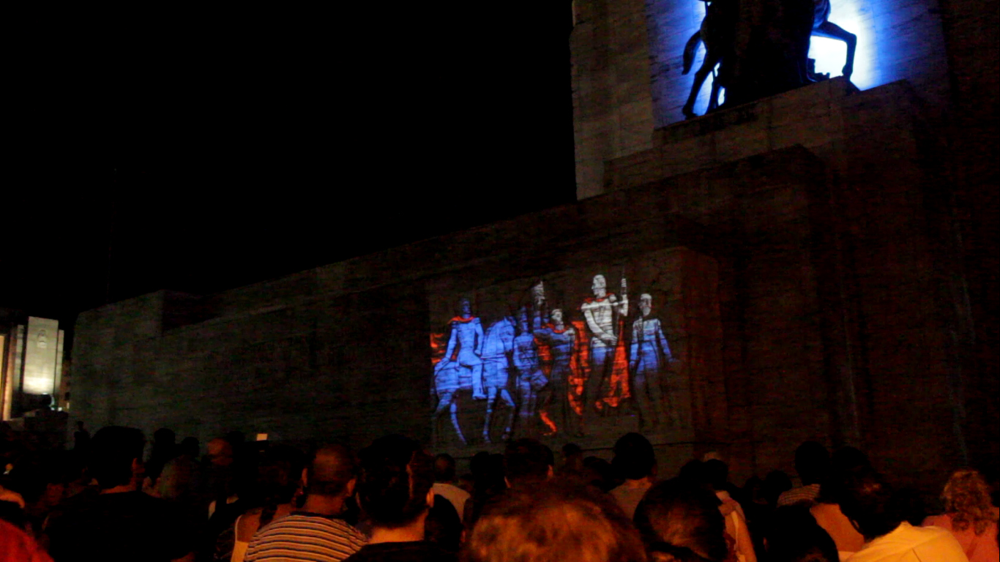
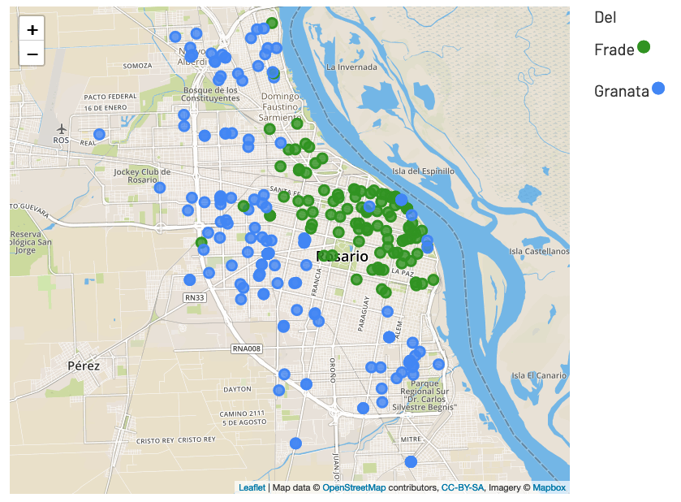
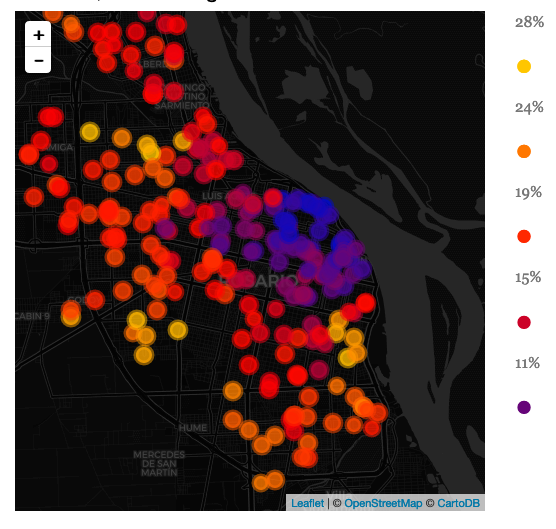

Geografía Política: Elecciones generales 2019, Rosario

Un mapa de la política en Rosario al momento de las elecciones generales de 2019.
Ir al sitio »Alejandro Panza | Rosario | Argentina In English →

Un mapa de la política en Rosario al momento de las elecciones generales de 2019.
Ir al sitio »

En sexto grado le conté a un amigo que me despertaba con un rayo de sol que se filtraba por la persiana y me daba justo en los ojos, todos los días. Por supuesto que era mentira. Pasó una vez y en el momento sentí la necesidad de agrandar la anécdota. El sol pasa por un camino un poco distinto cada día. A las nueve de la mañana de octubre pasa por la cama, a las nueve de la mañana de noviembre pasa por la mesa de luz.
Si la sombra de la ventana se mueve a cada hora, y pasa todos dias por un lado diferente, se puede hacer un reloj.
Que tán difícil puede ser hacer un reloj del sol? Continuar Leyendo »

¿Cansado de evitar las cuartas paralelas? Probar el arreglador (en inglés) »

Este video fue parte de una proyección que realizamos sobre el Monumento a la Bandera junto con Orquidea Mapping

Un mapa de la política en Rosario al momento de las PASO de 2019.
Ir al sitio »
Un mapa de la política en Rosario al momento de las elecciones generales de 2019. Reaizado con la colaboración de Nahuel Sciaratta.
Ir al sitio »